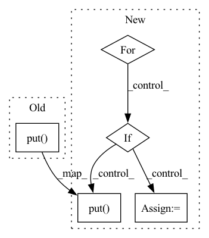

Pattern ID :16095
Before Change
// ...and re add them to the push queue
for failed_document in failed_documents:
self.pq.put( failed_document)
return failed_documents
@staticmethodAfter Change
]
// ...and re add them to the push queue...
for failed_document in failed_documents:
_id = failed_document["_id"]
if _id not in self.failed_frontier:
self.failed_frontier[_id] = 0
// ...only if they have failed less than the retry count
if self.failed_frontier[_id] < self.retry_count:
self.failed_frontier[_id] += 1
self.pq.put( failed_document)
return failed_documents
@staticmethodIn pattern: SUPERPATTERN
Frequency: 3
Non-data size: 5
Instances Fragment ID: 54002969
Project Name: relevanceai/relevanceai
Commit Name: 75ea9b5aa46860937936f06ee340adc50381bdf4
Time: 2022-08-23
Author: joseph.twin@relevance.ai
File Name: relevanceai/operations_new/ops_run.py
M Class Name: PullUpdatePush
N Class Name: PullUpdatePush
M Method Name: _handle_failed_documents(3)
N Method Name: _handle_failed_documents(3)
M Parent Class:
N Parent Class:
M File Name: relevanceai/operations_new/ops_run.py
N File Name: relevanceai/operations_new/ops_run.py
M Start Line: 282
M End Line: 290
N Start Line: 286
N End Line: 301
Before Change
reindex_peer = self.comm.other_peers.local_reindex
request = ReindexRequest(
index, self.comm.global_rank, reindex_peer, inputs, outputs, counts)
self.sync.upstream_queues[reindex_peer].put( request)
def handle_reindex_response(self, reindex_response):
batch_id = reindex_response.index.batch_id
nodes = reindex_response.nodes.clone()After Change
nodes, self.feature_size)
res = self.manager.prepare_request(batch_id, reorder, res)
group_peers = self.comm.group_peers
for rank, nodes in enumerate(res):
if rank == self.comm.group_rank:
features = self.manager.feature[nodes]
self.manager.recv_feature(
batch_id, rank, len(res), features)
continue
index = MicroBatchIndex(batch_id, rank, len(res))
req = FeatureRequest(
index, self.comm.global_rank, group_peers[rank], nodes)
self.sync.request_queues[group_peers[rank]].put( req)
// def handle_reindex_response(self, reindex_response):
// batch_id = reindex_response.index.batch_id
// nodes = reindex_response.nodes.clone() Fragment ID: 54002972
Project Name: quiver-team/torch-quiver
Commit Name: 45c305a8da8b1ec8bead6a706f4959421780de2a
Time: 2021-10-05
Author: ee_dalong@163.com
File Name: benchmarks/ogbn_products_sage/proc.py
M Class Name: DataProcess
N Class Name: DataProcess
M Method Name: handle_sample_response(2)
N Method Name: handle_sample_response(2)
M Parent Class: QuiverProcess
N Parent Class: QuiverProcess
M File Name: benchmarks/ogbn_products_sage/proc.py
N File Name: benchmarks/ogbn_products_sage/proc.py
M Start Line: 227
M End Line: 236
N Start Line: 220
N End Line: 268
Before Change
logging.debug(
"Uploading blob {} to container {}.".format(blob_name, container_name)
)
self.client.put( container_name, blob_name, abs_path)
@util.preserve_random_state
def download(self, metadata: StorageMetadata, storage_dir: str) -> None:
for rel_path in metadata.resources.keys():After Change
@util.preserve_random_state
def upload(self, storage_id: str, storage_dir: str) -> None:
storage_prefix = storage_id
for rel_path in sorted(self._list_directory(storage_dir)):
if rel_path.endswith("/"):
continue
// Use posixpath so that we always use forward slashes, even on Windows.
container_blob = posixpath.join(self.container, storage_prefix, rel_path)
blob_dir, blob_base = posixpath.split(container_blob)
abs_path = os.path.join(storage_dir, rel_path)
logging.debug(f"Uploading blob {blob_base} to container {blob_dir}.")
self.client.put( blob_dir, blob_base, abs_path)
@util.preserve_random_state
def download(self, storage_id: str, storage_dir: str) -> None:
storage_prefix = storage_id Fragment ID: 54002975
Project Name: determined-ai/determined
Commit Name: bea934113f5f38264d08c746372b4d086029d50f
Time: 2021-09-21
Author: rb@determined.ai
File Name: harness/determined/common/storage/azure.py
M Class Name: AzureStorageManager
N Class Name: AzureStorageManager
M Method Name: upload(3)
N Method Name: upload(3)
M Parent Class: StorageManager
N Parent Class: StorageManager
M File Name: harness/determined/common/storage/azure.py
N File Name: harness/determined/common/storage/azure.py
M Start Line: 60
M End Line: 73
N Start Line: 61
N End Line: 72